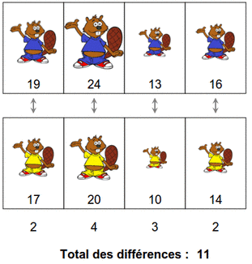
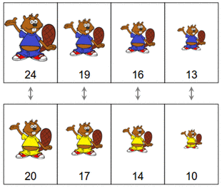
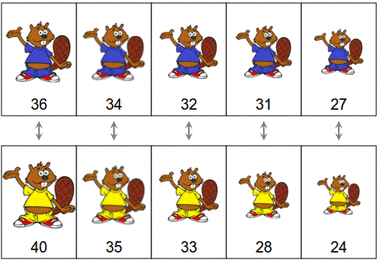
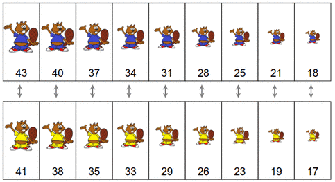

القنادس الزرقاء ترغب في اللعب مع القنادس الصفراء. غير ترتيب القنادس للحصول على أقل فارق في الحجم.
يجب أن يكون الفارق أصغر ما يكون
Remarque : les données de la correction ne correspondent pas forcément à celles de votre sujet.
En associant le plus grand castor bleu avec le plus grand castor jaune, puis le second plus grand castor bleu avec le second castor bleu, etc... jusqu'au plus petit castor bleu avec le plus petit castor jaune, on obtient la meilleure configuration.

Une manière très efficace d'associer les castors de cette manière est de trier tous les castors bleus par taille, puis tous les castors jaunes de la même manière. On obtient alors automatiquement des associations qui donnent le meilleur résultat possible.



D'autres configurations permettent d'obtenir le même total des différences, mais celle qui consiste à trier les castors permet de résoudre à coup sûr le sujet de manière très simple.
On essaie ici d'optimiser une certaine mesure, calculée selon la manière dont on range des éléments (ici, des castors).
Dans ce sujet, à chaque fois que l'on voit qu'on a deux paires de castors (deux castors bleus associés à deux castors jaunes), et qu'on pourrait diminuer la somme des différences en recomposant les deux paires (en mettant le premier castor bleu avec le second castor jaune, et le second castor bleu avec le premier castor jaune), on a intérêt à faire ce changement. Lorsqu'il n'y a plus aucune possibilité pour recomposer une paire de la sorte en améliorant le résultat, alors on a forcément obtenu une configuration optimale (c'est-à-dire la meilleure possible).
Comme dans ce sujet, il existe de nombreuses situations en informatique où l'on peut partir d'une configuration arbitraire, et ensuite l'améliorer petit à petit, jusqu'à converger vers une configuration optimale. Autrement dit, on peut converger vers le maximum global en effectuant une succession de petites améliorations locales.